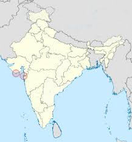
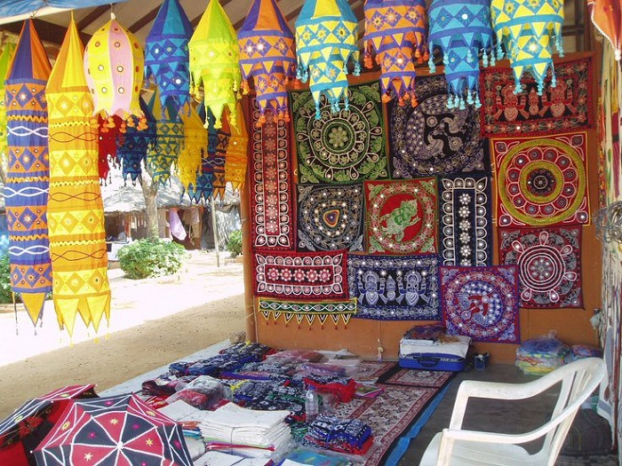
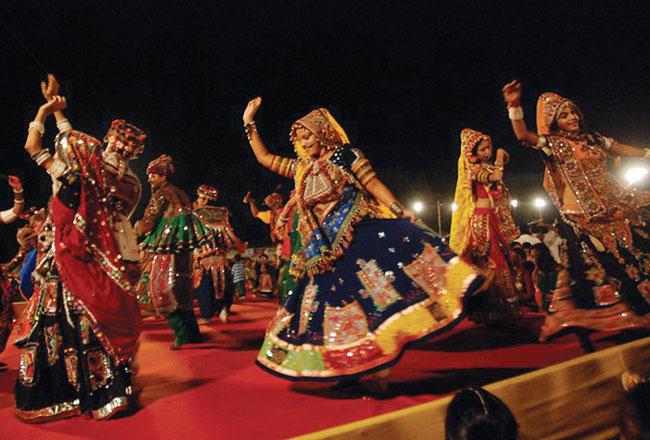
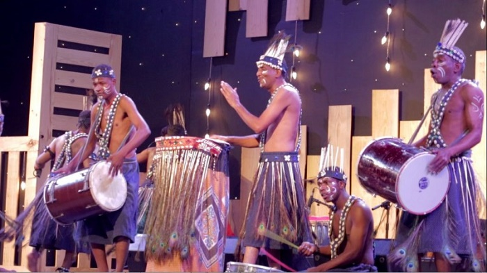
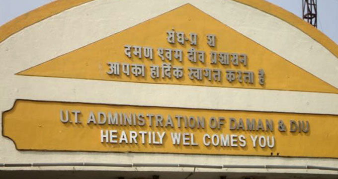
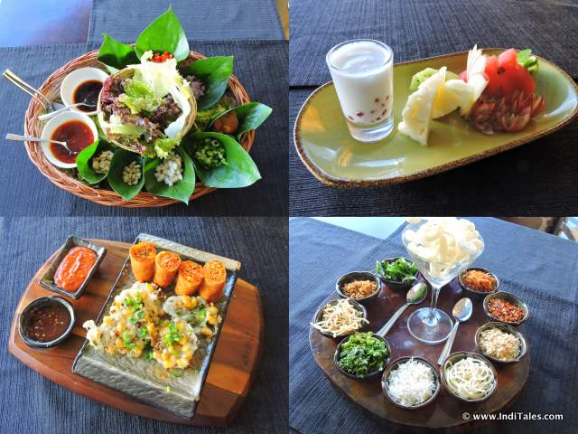
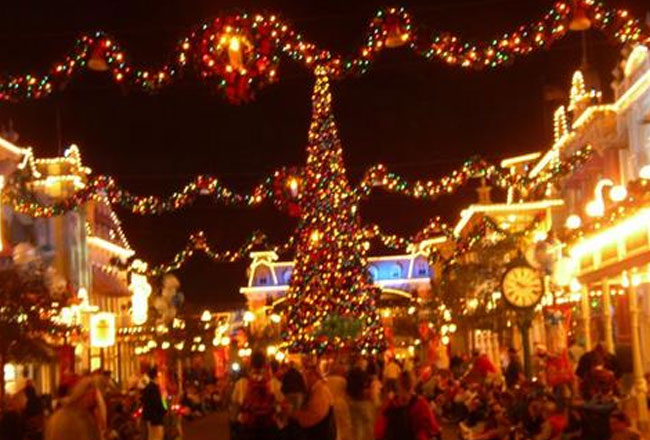

Daman and Diu
Location
Daman and Diu, union territory of India, comprising two widely separated districts on the
country's western coast. Daman is an enclave on the state of Gujarat's southern coast, situated 100 miles (160
km) north of Mumbai.

Arts and Crafts
Mat weaving forms an important art and craft of Daman region. A number of folks and traditional
motifs are used to make beautiful mats out of mat weaving. Ivory carving and tortoise shell crafts are popular
arts and crafts of Diu region. The availability of different varieties of tortoise on the shores of Diu has
largely facilitated the growth of tortoise shell craft in this region. Many of the household and decorative
items are made out of tortoise shells.

Dance
Daman and Diu is known for its Portuguese folk dances such as Mando dance, Verdigao dance and
Vira dance that are being performed on special occasions. Most of the dance’s themes are based on festivity,
eating, singing and drinking. People of Daman and Diu also organize folk dance festival. These folk dances are
performed in slow motions where both elders and youngsters participate in traditional dance. Garba is another
folk dance in this union territory. Garba dance has its origin in Gujarat state. This dance is performed by
women folks attired in multicolored costumes and beautiful ornaments.

Music
Folk music constitutes a popular form of music in this region. The folk music of ancient times,
Portuguese tradition and neighboring Gujarati music are being embraced to this day. Garba folk music is
generally sung in praise of Goddess.

language
The principal languages spoken in this Union territory are Gujarati, Marathi, Portuguese, Hindi
and English. However, English is being used as an official language in this union territory.

Foods
The cuisines of Daman and Diu comprise of sea food and Chinese food. Papri is the typical dish
served in the households of Daman and Diu. Papri is a boiled, sweet and salt peas. Crabs and lobsters are other
cuisines of this region. Lobsters and crabs are seasonal dishes widely available in October month.

Festivals
People of this region celebrate numerous festivals. The important festivals celebrated in Daman and Diu are
Navrathri festival, Garba festival, Folk Dance Festival, Gangaji fair, Holi, Dushera, Diwali, Id and Xmas.
The Navrathri festival is the biggest festival in Daman and Diu and is being celebrated with great pomp and
grandeur. The Garba festival is being observed for nine days where youngsters participate in dance wearing
bright and colorful costumes. The main part of Garba festival is paying homage to Goddess Amba. This
festival begins with traditional rituals involving the worship of Goddess Amba followed by devotional songs
and dances. The festival is held in the month of October or November. The Folk Dance Festival is another
important festival of Daman and Diu. The region is also known for Gangaji fair which is being held annually
in Dabhel village near Somnatha Mahadev temple. This fair attracts large people of people from within the
union territory as well as from other neighboring states.
The culture of Daman and Diu is blend of many culture and traditions. The region has absorbed rich culture
and traditions of earliest dynasties, Mughals and Portuguese. Despite the presence of diverse culture,
people of Daman and Diu live in absolute harmony and celebrate all the festivals with great pomp and
enthusiasm.
